We are given a library of PETase variants and four stages: express each one, check it expressed, purify it, and measure how well it degrades PET. This project assembles the protocol from the literature and the automation around it.
Click any phase to open it.
| Gate | Reads | Decides | Failure action |
|---|---|---|---|
| Expression gate phase 04 | Split-GFP concentration per well | Whether a variant is purified and given an assay slot at all | Dropped from the round, flagged with its concentration, retained for the next design round's input |
The library arrives as lyophilised linear gene fragments, one variant per well, with the regulatory elements synthesised into the fragment: T7 promoter, RBS, the tagged ORF, terminator. The plate is treated as archival stock Assumption. Fragments arrive in 96-well format, lyophilised, with the T7 promoter, RBS and terminator already synthesised into the fragment.Assumption 01 in the list →, resuspended in place, aliquoted out once, never used as a reaction vessel.
The plate map is ingested from TWIST documentation and used for well allocation and provenance throughout in a data model.
Gene fragments must be amplified, as the concentration we receive is variable and can be too low to support replicates and sample retention.
The plate is used as stock: gene fragments will be amplified, and samples of each construct will be stored in case further experimentation or troubleshooting is required.
Stage added to match DNA ng requirements. Assumption. Cycling, amplicon sizing and any spin-down are an existing automated stage that hands back a cycled plate in the labware this deck expects.Assumption 15 in the list → Each variant is amplified in its own reaction off the universal adapters, cleaned, quantified and normalised into a working plate.
Each variant is expressed from its normalised template in a cell-free transcription and translation reaction. Assumption. Every protocol here has already been optimised for PETase in these reactions, so the conditions are starting points that work rather than ones still to be tuned.Assumption 21 in the list →
An aliquot of each expression reaction is combined with refolded GFP1-10 detector and left to complement, then read as fluorescence and converted to an absolute concentration against a standard curve.
The sample volume is 5 µL. Diluting 5 µL into 15 µL of TNG puts the reading mid-curve and leaves 45 µL of each reaction for purification, and 40 µL for the activity assay.
Untagged-construct background control required per plate. Without it the fluorescence floor is unknown and every concentration carries an unmeasured offset, which then propagates into the normalisation and therefore into every activity number.
Two standard curves. Columns 1 and 2 carry duplicate GFP standard curves, pipetted with separate tips. A bad transfer in one curve then shows up as two slopes that disagree, rather than as a single wrong slope you have no way to catch. The curves sit on the sample plate itself because the slope depends on things that change from run to run: detector batch, complementation time, temperature, and reader gain..
Split-GFP quantification is carried out before and after purification. The first read is the gate: it says which variants made enough soluble protein to be worth putting on beads. It is also used in the output data to quantify expression of the proteins. The second read is required because the activity assay normalises every variant to 1 µM enzyme, and that concentration has to be measured.
Design decisions
| Parameter | Value | Status |
|---|---|---|
| Concentration floor for the gate | Set from the no-template and WT control distributions on the same plate | per plate |
| Levelling concentration | 1 µM, diluted 1:10 into the assay | config |
| Assay slots available | 72, that is 24 constructs at n = 3, with 24 wells kept for controls | geometry |
Groseclose et al. assay crude lysate after normalising it, and purify only the final one to ten variants.
Here, purification is added because the elution removes cell-free components from the assay well, which matters because the readout is absorbance in the UV where many of those components absorb.
Assumption. Whatever Buffer BXT carries into the assay well does not move the 240 nm reading, and if it does, the no-enzyme control on the same plate measures the offset and it is subtracted.Assumption 19 in the list → Protein is re-quantified after elution. Purification yield is not uniform across wells, so the concentration that matters for levelling is the one measured after the beads.
IBA publish a 96-well batch protocol for these beads [16].
Binding is 60 min at room temperature with the plate shaking at 700 rpm, elution 10 min at 400 rpm, repeated once. The beads are not reusable.
Assumption. One assay plate per 24 h is acceptable throughput, which is what keeps the scheduling trivial.Assumption 12 in the list → Normalised enzyme is added to wells that already contain a PET insert, sealed, and held at 68 °C. Supernatant is sampled at intervals and read as absorbance; the rise in aromatic product is the activity signal.
A240 reads aggregate aromatics Assumption. The assay geometry transfers from Groseclose's platform: same substrate, loading, temperature and readout.Assumption 09 in the list →, TPA, MHET and BHET together, so the reported quantity is total aromatic product in BHET equivalents, not a specific product. That is the right choice for a screen because different variants shift the TPA:MHET ratio, and a product-specific readout would rank variants partly on which product they happen to favour. It overestimates against HPLC by roughly 15–40%, consistently, which a ranking tolerates.
The read plate has to be UV-transparent. Standard polystyrene does not transmit at 240 nm. Supernatant is transferred into quartz or a UV-transparent plate for reading; the assay plate itself is deep-well polypropylene and never goes into the reader.
The whole plate is used, edges included Assumption. A seal at every timepoint holds evaporation across the whole plate, edges included. Assumption 10 in the list →, and it is resealed at every timepoint. The source platform left its edge wells empty as an evaporation precaution, which costs 36 of 96 wells. Here that precaution is treated as something to measure rather than inherit: an empty plate run on this hardware, with the seal and the sampling pattern we actually use, tells you whether the edges behave differently before a third of the plate is given up for them.
| Field | Units | Meaning |
|---|---|---|
variant_id | n/a | Identity from the Twist plate map, carried unchanged through every hop |
soluble_conc | µM | Split-GFP concentration from the second read, on the eluate, against the on-plate calibration curves |
gate_outcome | enum | pass · fail · queued. Read from GateResult, which keeps the threshold that produced it |
product_release | µM BHET eq. | Baseline-subtracted A240 converted against the BHET standard, per timepoint |
initial_rate | µM h⁻¹ | Slope over the linear region, fitted from TimeCourse with the points used recorded |
relative_activity | ×WT | Rate relative to WT-PETase-GFP11, which sits among the 24 constructs on the same plate |
qc_flags | list | Saturation, baseline drift, control failure, seal event missed. Carried on each Reading |
The complete workflow was implemented in PyLabRobot to assess its end-to-end feasibility and identify potential issues or overlooked constraints.
The code is not yet ready for execution, as hardware-specific parameters and physical configurations still need to be defined. These are required inputs with no default values, ensuring that missing information is explicitly flagged rather than assumed.
The screen carries DNA from a supplier plate through to an enzyme activity rate. Five stages: resuspension, cell-free expression, split-GFP quantification, Strep-tag purification, and a PET hydrolysis assay. Each stage plans as plain data and runs in simulation.
| Stage | Module | Does |
|---|---|---|
| 0 | planning/stage0_resuspension | Resuspends dried DNA on the supplier plate |
| 2 | planning/stage2_expression | Builds the master mix, runs cell-free expression |
| 3 | planning/stage3_quantification | Split-GFP read, calibration curve, gate |
| 4 | planning/stage4_purification | MagStrep bead capture and elution |
| 5 | planning/stage5_activity | PET hydrolysis, A240 time course, rate fit |
Each stage exposes one plan_* function returning a Plan. Stage 3 runs twice: once on the expression lysate to decide what is worth purifying, once on the eluate to measure what purification recovered.
Three layers, each with one job.
domain/Holds the biology and the arithmetic. Plate layouts, master mix volumes, calibration curves, bead capacity, reaction rates, provenance. It works on numbers in a dict, so the chemistry is testable on its own.
planning/Turns domain state into a Plan: an ordered list of immutable records. Each record names a role and a well, carries the reason it exists, and lists the variants it touches. A plan prints, diffs, and serialises to JSON before anything moves.
execution/Resolves role names against a deck binding and calls PyLabRobot. PyLabRobot appears here and here alone, so retargeting to another robot means one binding file.
The operation vocabulary is eleven kinds, and the executor dispatches on kind and raises on anything else.
TRANSFER MIX DISCARD MOVE_PLATE SET_TEMPERATURE INCUBATE SHAKE SEAL PEEL READ WAIT
Everything runs on PyLabRobot's chatterbox backends. Volume tracking, tip tracking and Strictness.STRICT are all on at setup, so the simulation checks volumes and tips independently of the plan's own arithmetic. Both start from the same inputs, so agreement between them is evidence and disagreement is a bug.
device_extras_sim/ adds the devices PyLabRobot 0.2.2 leaves out: a sealer, a peeler, and a temperature controller that reports active cooling. It stays generic and reusable.
One layout serves every plate in the screen, so a variant keeps the same well name from the Twist plate to the eluate.
Each stage writes a CSV of events. The accumulating record is those files joined in order, and it answers which wells hold a variant, whose material is in a given well, and whether every well a variant was drawn from is a well it had reached.
python -m venv .venv .venv/bin/pip install -e ".[dev]" .venv/bin/python -m pytest
Python 3.13 and above. PyLabRobot 0.2.2 is the one runtime dependency. 157 tests, around 5 seconds, run against the installed package.
src/
petase_screen/
domain/ 11 modules — the science and the arithmetic
planning/ 7 modules — stages and the operation vocabulary
execution/ 2 modules — deck bindings and the executor
device_extras_sim/
simulated sealer, peeler, active cooling
tests/ 10 modules, 157 tests
Named instruments are one binding of these roles, not the design. Anything that satisfies the requirement column can be swapped in.
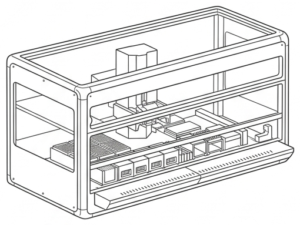
Liquid handlerEvery transfer in the workflow. Single-channel access is what makes cherry-picking gate passers possible.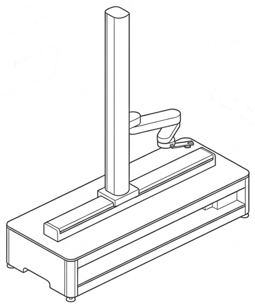
Robot armMoves plates between deck positions and instrument drawers. Assumed separate from the handler's own gripper.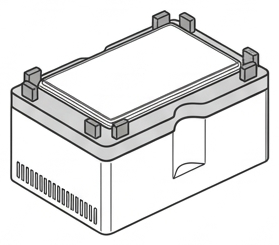
Heater-shakerExpression incubation, and the orbital mixing that replaces rotational mixing during bead binding.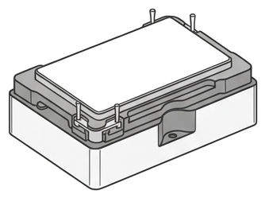
Heat-cool plateHolds lysate and master mix below ambient while the reaction plate is built.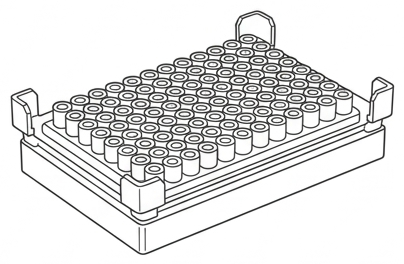
MagnetBead capture during purification, with clearance to aspirate without disturbing the pellet.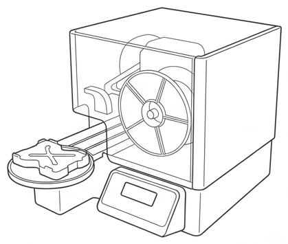
PeelerRemoves the seal before every read and every pipetting step.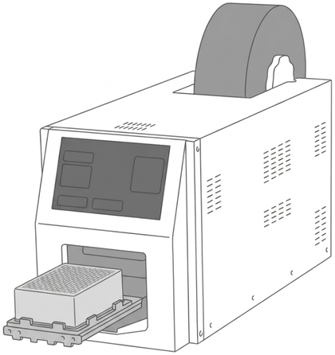
SealerSeal before every incubation and before every assay timepoint. Off deck, drawer within the arm's reach, same pattern as the peeler.| Role | Requirement | Phases |
|---|---|---|
| Liquid handler | Single-channel access for cherry-picking at the gate, multichannel for plate-wide distribution, reliable at 3 µL and above | 01 to 07 |
| Gripper / robotic arm | Moves plates between deck positions and instrument drawers. Assumed to be a separate arm, not the handler's own gripper | all |
| Cooler / heater plate | Holds lysate, polymerase mix and master mix below ambient while a plate is built, and heats the same position when a step needs it | 02, 03, 06 |
| Heater-shaker | Plate position, thermally controlled, orbital shaking for expression and bead binding | 03, 06 |
| Hot incubator | 68 °C for 24 h, holds a sealed deep-well plate | 07 |
| Magnetic separator | Bead capture with clearance for aspiration without disturbing the pellet | 02, 06 |
| Sealer | Seals, off deck, drawer within the arm's reach | 03, 07 |
| Peeler | Removes seals before every read and every pipetting step | 03, 04, 07 |
| Plate reader, multimode | One instrument covers the whole screen: absorbance from 220 nm for the 240 nm assay read, fluorescence at 488 / 530 for split-GFP, and a dsDNA quant after the PCR cleanup. A CLARIOstar-class reader does all three | 02, 04, 06, 07 |
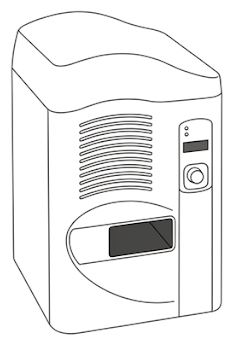
Currently, automation is designed for a standard tip-bsaed liquid handler to avoid dependance on specialized equipment.
However, if an acoustic liquid handler could be used, it would [15]:
enable nanolitre transfers without pipette tips
reduce reaction volumes to 10 µL or less
roughly double the number of rounds supported by the available lysate
reduce or eliminate the need for PCR amplification
Hardware setup
Hamilton STAR liquid handler with robotic arm for off-deck transfers
Cooling/heating plate and heater-shaker
On-deck magnetic separation
Standalone plate sealer and peeler
Fluorescence reader and UV-capable absorbance reader
Software and simulation
All devices controlled through Python using PyLabRobot
PyLabRobot supports simulated operation for most devices, allowing protocols to run without physical hardware
Sealer and peeler lack simulation support, so custom simulators are needed Assumption. Drivers for the sealer and the peeler exist and are already implemented, so the only thing missing is their simulation backend.Assumption 20 in the list →
The deck layout was not optimized, as it depends on the specific instrument and labware used. However, the following factors must be considered during implementation:
Instrument reach: Each pipetting head, gripper and robotic arm has different reach limits. All required positions must be accessible to the appropriate devices.
Physical clearance: Labware height, equipment size and robotic movement paths must be checked to prevent collisions.
Plate transfers: Each plate needs accessible pickup, destination and handoff positions, with enough space for the gripper to operate.
Pipetting constraints: Tip compatibility, channel accuracy, minimum transfer volumes and liquid-level detection must be verified.
Consumables and waste: Tip racks and waste containers must have sufficient capacity for a full unattended run.
Temperature control: Heating and cooling positions must maintain the required conditions throughout the workflow.
Deck occupancy: The layout must accommodate the maximum number of items needed simultaneously, including plates undergoing incubation. Assumption. The deck has room for everything the run needs, with no additional holder rack and no mid-run swap.Assumption 04 in the list →
Labware compatibility: Each plate, tube and carrier requires a validated labware definition and instrument-specific positioning.
Calibration: Reach, positioning and pipetting limits must be verified on the actual instrument before operation.
One round is 24 constructs, each expressed three times, so 72 variant wells and 24 control wells on every plate.
| Item | Format | Per round | Basis |
|---|---|---|---|
| Twist fragment plate | 96, lyophilised | 1 per four rounds | The input. Amplified once, then drawn on 24 constructs at a time. Kept as archival stock |
| PCR plate | 96 PCR, skirted | 1 per four rounds | One reaction per construct, cycled off deck, enough template for every round |
| Template plate | 96 PCR, skirted | 1 per four rounds | Cleaned, quantified, normalised working copy |
| Expression plate | 96 PCR | 1 | 72 variant wells, 24 constructs at n = 3, plus 6 control reactions |
| Split-GFP plate | MaxiSorp 96 | 1 | 200 µL per well |
| Binding plate | 96 V-bottom, 300 µL, PCR format | 1 | Beads and sample. A V-bottom gives a steeper pellet than the round-well bottom the protocol suggests [16]. 300 µL is what lets the vendor volumes run unmodified, since the fullest moment is 240 µL |
| Elution plate | 96 V-bottom, 300 µL, PCR format | 1 | Fresh plate. The eluate is transferred off the beads, so it cannot be the binding plate |
| Assay plate | deep-well 96 | 1 | All 96 wells used: 72 variant wells and 24 controls |
| Read plate | UV-transparent 96 | 7 | One per timepoint. |
| Seals | sealer roll | 10 or more | Expression, split-GFP, and a fresh seal at every one of the seven assay timepoints |
| Tips | filtered | ~1,600, estimate | 96 PCR setups and cleanups, 78 template transfers, 96 quantification aliquots, four steps across 72 purification wells, 72 enzyme additions, then 7 × 96 sampling transfers |
Tip size is a per-step choice depending on hardware. This is an example of tips that could be used for the Hamilton STAR.
The rule applied throughout: the smallest tip whose maximum covers the transfer.
| Step | Volume | Tip | Why |
|---|---|---|---|
| Template into PCR, and into expression | 3 to 4 µL | 10 µL | The smallest transfer in the workflow, and the one that sets the reaction volume. It gets the tip with the finest orifice |
| Master mix build, reagent into mix well | 2 to 40 µL | 50 µL | One tip class for the whole build keeps the step simple, and every component is inside the range |
| Master mix distribution | ~16 µL | 50 µL | Single tip across the plate, so the tip is pre-wetted once and the volume stays mid-range |
| Split-GFP sample aliquot | 20 µL | 50 µL | Mid-range, and the fresh tip per well matters more here than the size |
| Detector into read plate | 180 µL | 300 µL | Smallest tip that takes it in one aspiration, which halves the step count |
| Bead binding and washes | 36 to 200 µL | 300 µL | Covers both the bead slurry and the ethanol wash without a tip change between them |
| Assay buffer into wells | 450 µL | 1000 µL | The only step that needs the largest tip. One aspiration per well |
| Enzyme into assay well | 50 µL | 300 µL | Dispensed into a much larger volume, so the tip is chosen for clean delivery rather than for precision at the limit |
| Supernatant sampling | ~50 µL | 300 µL | Drawn from a 500 µL well with a PET coupon in it, so a wider orifice is less likely to foul |
Every source holds liquid that cannot be aspirated: the cone at the bottom of a tube, the corner of a trough, the residual film left in a tip. PyLabRobot's volume tracking does not model it.
Therefore, dead volume is added explicitly in the planner. Each source carries a dead volume figure, the master mix is built with an excess over the arithmetic sum, and the plan is developed with the usable volume.
| Source | Allowance | Note |
|---|---|---|
| Master mix well or trough | Excess over the calculated need | Covers both the unaspirable residue and the per-transfer loss across a whole plate |
| Lysate tube | Subtracted from the usable volume | The finite reagent, so its dead volume directly reduces how many rounds are possible |
| Reagent reservoirs | Per-labware figure | Geometry-dependent, so it belongs in the labware definition rather than in the protocol |
| Elution and sample wells | Leave behind, do not chase | Aspirating to the bottom of a bead well risks carrying the pellet with it. The height the tip stops at is a calibrated number Assumption. The tip offset that lets a channel aspirate off a magnet without touching the bead pellet is already calibrated for this plate and this magnet, and holds for every well.Assumption 16 in the list → |
Everything below is listed at working strength, because reagent preparation sits outside the run Assumption. Anything that needs preparing before the run has been prepared. Concentrates are already at working strength, so a buffer supplied at 10× was diluted to 1× ahead of time, in one batch large enough for every run it has to serve. The detector is already refolded, stocks are already resuspended.So no step in the protocol dilutes a stock, and no deck position holds a concentrate. Every reagent on the deck is ready to pipette.Assumption 18 in the list →. One round is the unit, so a figure here multiplies by the number of rounds a batch has to cover.
| Reagent | Per well | Per round | Note |
|---|---|---|---|
| Cell-free lysate and buffer | ~39 µL of a 50 µL reaction | ~3.0 mL | The finite shared tube. This is the number that decides how many rounds are possible |
| GFP1-10 detector in TNG | 180 µL | ~17 mL | The quiet cost of the design. Ten times the lysate volume, and it has to be refolded in advance |
| Resuspension buffer | ~20 µL | ~2 mL | Tris or TE, not water |
| MagStrep beads | 40 µL of 5% suspension | ~2.9 mL | 2 µL of settled beads per well, holding up to 0.85 nmol each. Not reusable |
| Buffer W, 1× | ~1.4 mL | ~101 mL | Six washes of 200 µL, three to equilibrate and three after binding, plus making the sample up to 200 µL |
| Buffer BXT, 1× | 100 µL | ~7.2 mL | 50 µL per µL of beads, eluted twice into the same well. open biotin content versus the 240 nm read |
| Sodium phosphate, 100 mM pH 8 | 500 µL | ~48 mL | Assay buffer, 96 wells |
| PET inserts | 1 coupon, ~2.5 mg | 96 | Pre-loaded in the assay plate |
One board per phase. Each is the robot version of the protocol: the steps in order, the plate it acts on, and the rules the volumes have to satisfy.
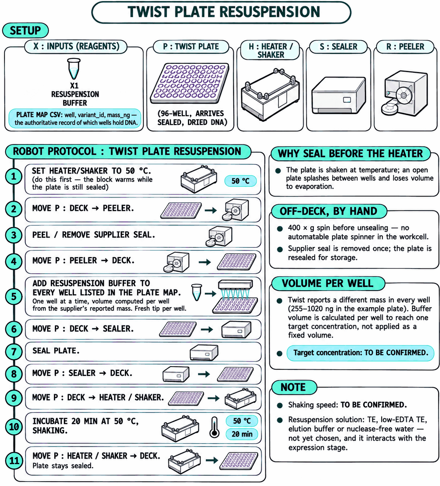
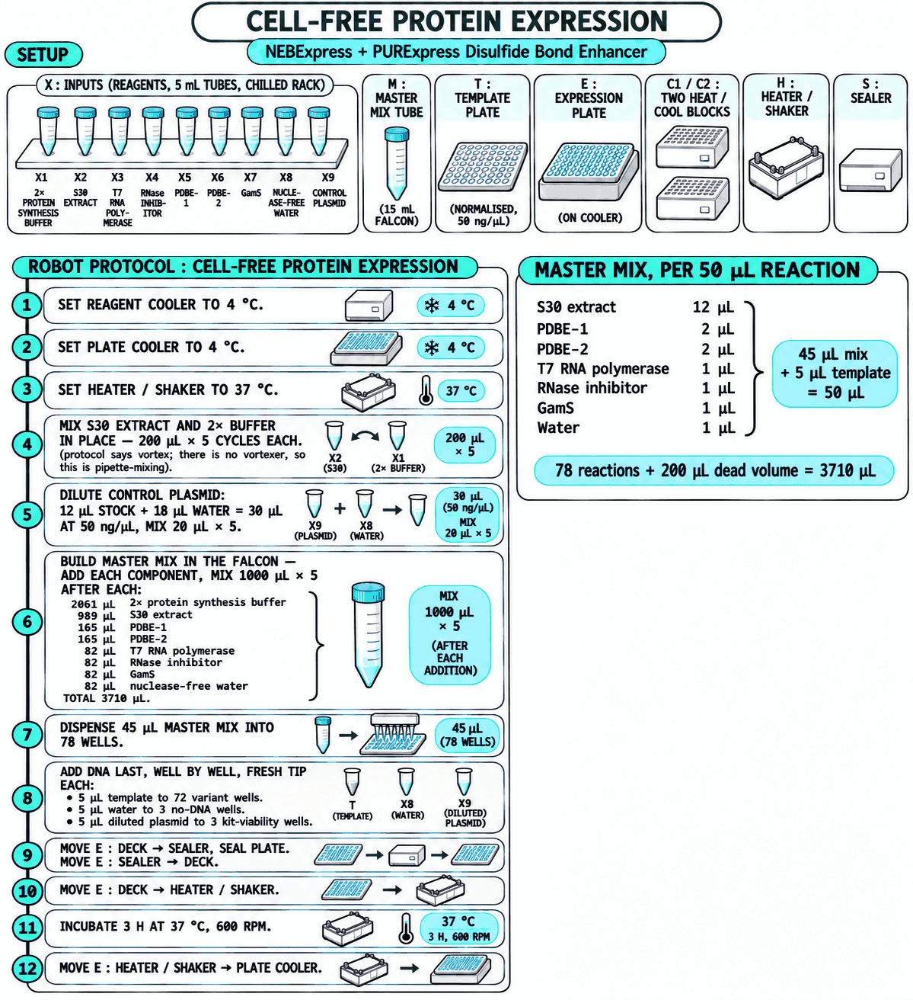
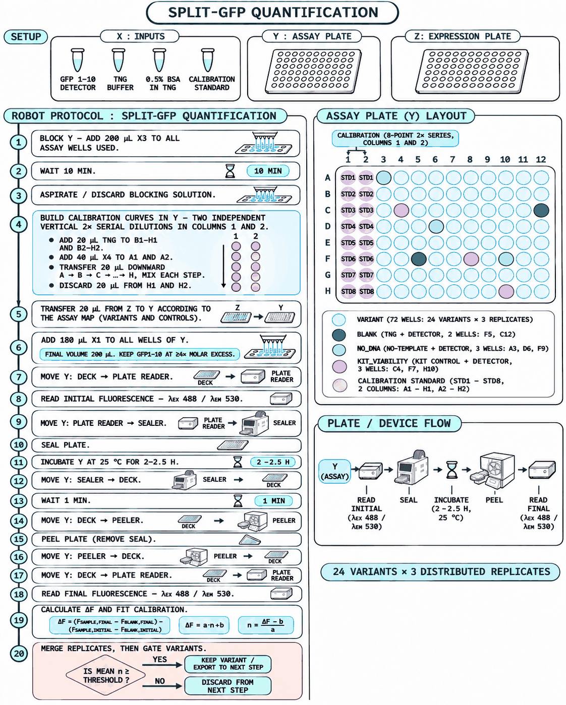
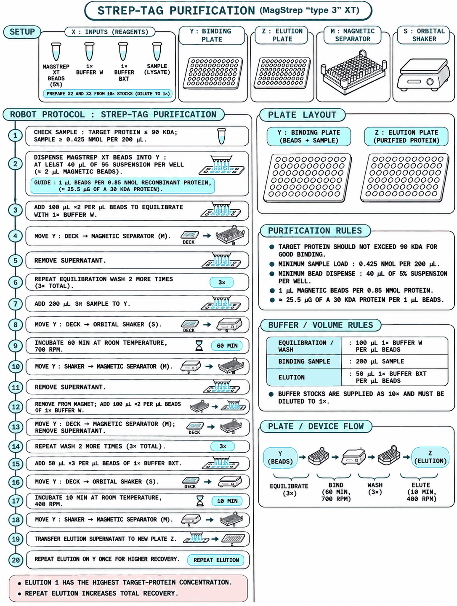
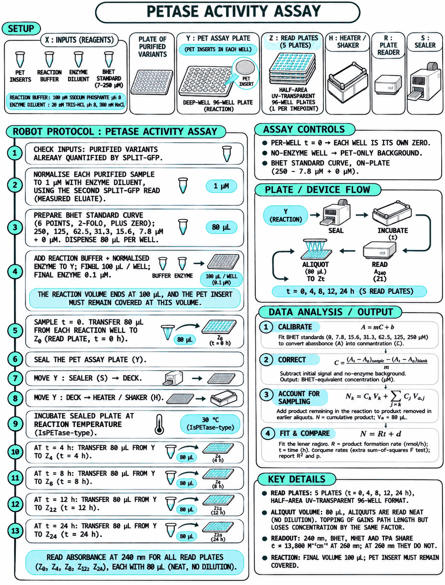
The data model maintains a complete link between each plate-reader result and its originating variant, independent of the equipment used.
Each record identifies the variant and its location. Variant identity is assigned from the Twist plate map and remains fixed. Location is updated after each transfer.
| Field | Example | Meaning |
|---|---|---|
variant_id | V07 | Permanent variant identifier, assigned from the supplier plate map |
stage | stage3_quantification | Workflow stage in which the event occurred |
source | expression_plate:H3 | Source plate or container and well position |
destination | assay_plate:H3 | Destination plate or container and well position |
volume_ul, liquid | 5.0, expressed_V07 | Transferred volume and material identity |
reason | free text | Purpose of the operation, recorded during planning |
A result is linked to a specific variant and replicate, not just a plate position. For example, the measurement for V07, replicate 1, at read_plate_t24:H3 can be traced through the assay, eluate, binding and expression plates to twist_plate:G1.
Each Twist source well is distributed into three separate expression replicates. From that point onward, transfers follow a 1:1 well mapping. Well positions remain consistent through the final readout, avoiding additional remapping between stages.
The selection gate reduces the number of variants processed without changing their assigned well positions.
| Hop | Mapping |
|---|---|
| Twist plate → expression plate | One source well becomes three spatially separated replicates |
| Expression → assay → binding → elution → PET assay → read | Well positions remain unchanged across stages |
| Gate | Selected variants retain their existing well positions |
Each stage exports its events to a CSV file. Together, these files form a chronological record of sample transfers and processing steps.
| Question | Answer |
|---|---|
| Which assay-plate wells contain V07? | H3, C7, E10 |
Which variant is present at expression_plate:D9? | A single variant ID, or an empty well |
| Which operations involved V07, and in what order? | 19 recorded events across two stages |
| Can every transfer be traced to an earlier source? | Missing links are reported for each affected variant |
The final check identifies breaks in sample traceability. For example, linking stage 0 and stage 2 produces 29 gaps at the template plate because PCR is handled outside the automated cell. The model identifies this missing intermediate stage without requiring it to be specified in advance.
| Type | Stored information | Purpose |
|---|---|---|
PlateMap | Well position, variant ID and supplier-reported mass | Defines variant identity using the supplier plate map |
PlateLayout | Well position, content ID, sample or control type, replicate number | Maintains a consistent layout across screening plates |
Operation | Operation type, plate role, well, volume, material, purpose and associated variants | Immutable, JSON-serializable description that uses identifiers rather than hardware objects |
Plan | Ordered sequence of operations | Supports review, comparison and identification of missing parameters |
Reading | Well-level results, measurement mode and simulation status | Keeps simulated results clearly distinguished from measured data |
ProvenanceEvent | Stage, operation, variant, source, destination and volume | Provides the event-by-event sample history for each variant |
MasterMixBuild | Component volumes, dead volume, total volume and deviations from kit instructions | Records deviations from the supplier protocol explicitly |
GateResult | Selection threshold, retained and excluded variants, summary statistics | Preserves the criteria and results needed to reproduce variant selection |
TimeCourse | Sampling times, concentrations, reaction volumes and aliquot volumes | Supports volume-corrected calculations of cumulative product formation |
| Validation rule | Response if the check fails |
|---|---|
| Each variant in the supplier plate map is assigned to exactly one source well | Stop loading and identify the affected CSV line |
| Replicates of the same variant occupy different rows and columns | Stop and identify the variant and conflicting positions |
| Every master-mix component meets the minimum reliable transfer volume | Stop and report the component and required volume |
| The master mix fits its container, including dead volume | Stop and report how many reactions the container can support |
| Mixing volume does not exceed tube capacity | Stop during planning |
| Template transfer volume stays within the validated pipetting range | Stop and identify the affected wells and concentrations |
| Sufficient liquid remains to cover the PET insert after sampling | Stop and report the remaining volume |
| All required operation parameters are defined | Stop before execution and list all missing parameters |
| Every plate or device role referenced in the plan is defined on the deck | Stop before execution |
| Every operation type has an implemented execution handler | Stop rather than silently omitting a required operation |
Considering 384-well plates if libraries grow beyond one plate or Twist supplies samples in 384-well format.
Sub-microlitre transfer would let the cell-free reaction drop to 10 µL or below, roughly doubling how many rounds the finite lysate supports. It is the highest-value hardware change available to this design. NEB and Beckman Coulter report miniaturising NEBExpress and PURExpress reactions 50 to 100-fold on an Echo 525 with no discernible loss in activity [15].
Holding normalised lysate at a temperature gradient for an hour, then re-reading split-GFP, measures remaining soluble protein, thermostability from the assay already built. For an enzyme screened at 68 °C, that matters as much as the rate does.
A240 sums TPA, MHET and BHET. Variants differ in which product they favour, and a variant that stalls at MHET is not equivalent to one that goes to TPA, even at identical total aromatic release.
The screen runs 24 constructs at n = 3, which spends three quarters of the plate on replication. Dropping to n = 2 would carry 32 constructs and n = 1 would carry 86, at the cost of the per-construct error bar.
1. Simulation
Run the full protocol on a simulated deck before using reagents
Track liquid volumes and tip usage
Detect errors such as insufficient reagent volumes or pipetting into sealed plates
2. Hardware dry run
Run the protocol with water instead of reagents
Verify robotic reach, plate positioning, instrument access and collision-free movements
Check magnetic separation and plate handling
3. Calibration
The 3 µL minimum transfer volume was established experimentally using fluorescein dilution series
Compare manual and automated pipetting accuracy across plates
Recalibrate minimum transfer volumes for each new instrument
Nothing in this design puts anything back. The reagent plate goes to the cooler / heater plate at the start of a phase and stays on deck, and the Twist archival plate, the purified eluates and any leftover master mix are left where they are at the end of a run.
A real unattended cell needs the return trip: a refrigerated or frozen module on the cell, a rule for what goes back and when, and a record of how long each item spent at room temperature, since that is a quality attribute for lysate and for purified protein. It is a scheduling and hardware constraint rather than a protocol one, which is why it is here and not in the protocol.
Trigger: runs that span more than one working day, or any run where reagents are expensive enough that recovering them matters.
| # | Assumption | Why | If wrong |
|---|---|---|---|
| 01 ↩ | Fragments arrive in 96-well format, lyophilised, with regulatory elements synthesised in | Twist's documented options, and it keeps the primers short | 384 delivery adds a redistribution hop. Elements added by overhang instead would mean 70 to 100 nt primers, with RBS spacing left to chance |
| 02 ↩ | Every variant is amplified before expression | At the bottom of Twist's guaranteed range a well cannot fund one reaction, let alone repeats | Nothing, if yields come in high. The cost is a stage that could have been avoided |
| 03 ↩ | The PCR yields enough template for three expression runs plus retained stock | Three runs covers the quantification tier, the full-volume tier and one repeat of anything that fails QC, without going back to the archival plate | A second amplification off the Twist stock, which is allowed, or a round that cannot repeat a failed well |
| 04 ↩ | The deck has room for everything, with no additional holder rack | Twelve positions cover source, cold, reaction, two tip racks, magnet, three read or assay plates, buffers, waste and staging | A rack has to be swapped mid-run, which breaks unattended operation, or the layout moves to a larger deck |
| 05 ↩ | No transfer in the protocol is below 3 µL | Below that, air-displacement pipetting stopped being reproducible in my own calibration work, with 2 µL failing | Nothing, this is the conservative direction. On an acoustic dispenser the floor disappears and the protocol is worth rewriting around smaller volumes |
| 06 ↩ | Universal adapters allow one primer pair for all 96 wells | A Twist ordering option | Per-variant primers, which would make a plate-wide master mix impossible |
| 07 ↩ | Twist plate well geometry is unknown and not depended on | Not publicly specified anywhere I could find | Nothing, material moves into a controlled plate first |
| 08 ↩ | Cell-free reaction at 50 µL, 37 °C, 3 h | NEBExpress's standard reaction volume, which also keeps every transfer well clear of the 3 µL reproducibility floor | Lysate runs out sooner than planned; acoustic dispensing is the fix |
| 09 ↩ | Assay geometry transfers from the published platform | Same substrate, loading, temperature and readout | Rates shift; rankings within a plate survive |
| 10 ↩ | A fresh seal at every timepoint holds evaporation across the whole plate, edges included | The published no-loss result used empty edges as well, so this is the weaker claim of the two and is the one to test first | Concentrations drift upward at the margins, and the edge wells have to be given up after all |
| 11 ↩ | Three independent expression reactions per construct, scattered across the plate | Replicating the expression rather than the read puts expression variability, plate position and pipetting inside the error bar instead of outside it | 24 constructs per round rather than 86, so a 96-member library takes four rounds |
| 12 ↩ | One assay plate per 24 h is acceptable throughput | Keeps scheduling trivial and sampling times exact | If not, the problem becomes job-shop scheduling, not protocol design |
| 13 ↩ | Activities are comparable only within the GFP11-tagged series | Tagging costs 6–29% of activity in published fusions | Nothing, provided no comparison is made to untagged literature values |
| 14 ↩ | Variants arrive with the GFP11 tag and the Strep handle already in the sequence | It is what lets one primer pair, one master mix and one protocol serve every well | Tags go on by primer overhang, with 70 to 100 nt primers and the RBS spacing left to chance, or a cloning step comes back |
| 15 ↩ | The PCR stage is already automated and compatible with this cell | Cycling, amplicon sizing and spin-down are solved instruments, and the design question here is the cell-free screen, not the amplification | Three devices come back into the roster and the arm needs reach to all three, which is a deck and scheduling problem rather than a protocol one |
| 16 ↩ | The tip offset for aspirating off the magnet without disturbing the pellet is already calibrated | It is a per-plate, per-magnet geometry number that a dry run with water settles, not a protocol decision | Beads carried into the eluate or supernatant left behind, either one a silent per-well bias in the assay |
| 17 ↩ | The construct is about 33 kDa, which fits the purification protocol | PETase catalytic domain plus Twin-Strep, GFP11 and GS linkers, against a binding ceiling near 90 kDa. No parent scaffold is fixed in the brief | Little. Levelling is molar throughout, so the number only gates the binding ceiling and the minimum sample load |
| 18 ↩ | All reagents needing prior preparation are prepared, at working strength, in enough volume for every run | Dilution and refolding are batch bench work with their own QC, not per-run robot steps, and doing them once avoids a per-step dilution error repeated 96 times | Extra deck positions for concentrates and diluent, a dilution step before several phases, and a new error mode where one mis-diluted batch silently scales every number in the run |
| 19 ↩ | Elution carry-over does not shift the 240 nm read, and if it does it can be corrected for | The no-enzyme control sits on the same plate in the same buffer, so a constant offset subtracts out | If the offset is not constant between wells it becomes a per-well bias, and the elution buffer has to change or the enzyme has to be buffer-exchanged |
| 20 ↩ | Sealer and peeler drivers exist and are already implemented | Both are standard instruments, and only their simulation backends are missing from PyLabRobot | Two devices that touch every plate cannot be driven, which stops the run rather than degrading it |
| 21 ↩ | Every protocol has already been optimised for PETase in these reactions | The design question here is the automation, not the biochemistry, so the conditions are treated as given | Conditions become parameters to sweep, which is a round of optimisation before the screen rather than a change to it |
| 22 ↩ | The wild type is always one of the designed variants | It keeps one layout for every plate, with no reserved WT position, and the reference is measured under exactly the conditions the variants are | A well has to be taken from the 24 for WT, or the reference comes from a different plate and stops correcting for plate-to-plate variation |
| # | Citation |
|---|---|
| [1] ↩ | Kim, W., Han, J., Chauhan, S. et al. Cell-free protein synthesis and vesicle systems for programmable therapeutic manufacturing and delivery. J Biol Eng 19, 55 (2025). doi:10.1186/s13036-025-00523-x |
| [2] ↩ | Yin, G. and Swartz, J.R. (2004), Enhancing multiple disulfide bonded protein folding in a cell-free system. Biotechnol. Bioeng., 86: 188–195. doi:10.1002/bit.10827 |
| [3] ↩ | Cabantous, S., Waldo, G. In vivo and in vitro protein solubility assays using split GFP. Nat Methods 3, 845–854 (2006). doi:10.1038/nmeth932 |
| [4] ↩ | Pham, T.D., Poletti, C., Tientcheu, T.M.N. et al. FAST, a method based on split-GFP for the detection in solution of proteins synthesized in cell-free expression systems. Sci Rep 14, 8042 (2024). doi:10.1038/s41598-024-58588-5 |
| [5] ↩ | Müller C, Igwe CL, Wiechert W, Oldiges M. Scaling production of GFP1-10 detector protein in E. coli for secretion screening by split GFP assay. Microb Cell Fact. 2021;20(1):191. doi:10.1186/s12934-021-01672-6 |
| [6] ↩ | Santos-Aberturas J, Dörr M, Waldo GS, Bornscheuer UT. In-depth high-throughput screening of protein engineering libraries by split-GFP direct crude cell extract data normalization. Chem Biol. 2015;22(10):1406–1414. doi:10.1016/j.chembiol.2015.08.014 |
| [7] ↩ | Groseclose TM, Kober EA, Clark M, Moore B, Banerjee S, Bemmer V, Beckham GT, Pickford AR, Dale TT, Nguyen HB. A High-Throughput Screening Platform for Engineering Poly(ethylene Terephthalate) Hydrolases. ACS Catal. 2024;14(19):14622–14638. doi:10.1021/acscatal.4c04321 |
| [8] ↩ | Zhong-Johnson, E.Z.L., Voigt, C.A. & Sinskey, A.J. An absorbance method for analysis of enzymatic degradation kinetics of poly(ethylene terephthalate) films. Sci Rep 11, 928 (2021). doi:10.1038/s41598-020-79031-5 |
| [9] ↩ | Pirillo V, Pollegioni L, Molla G. Analytical methods for the investigation of enzyme-catalyzed degradation of polyethylene terephthalate. FEBS J. 2021;288(16):4730–4745. doi:10.1111/febs.15850 |
| [10] ↩ | Joo, S., Cho, I.J., Seo, H. et al. Structural insight into molecular mechanism of poly(ethylene terephthalate) degradation. Nat Commun 9, 382 (2018). doi:10.1038/s41467-018-02881-1 |
| [11] ↩ | Urbanek AK, Kosiorowska KE, Mirończuk AM. Current Knowledge on Polyethylene Terephthalate Degradation by Genetically Modified Microorganisms. Front. Bioeng. Biotechnol. 2021;9:771133. doi:10.3389/fbioe.2021.771133 |
| [12] ↩ | NEBExpress Cell-free E. coli Protein Synthesis System manual, E5360, and PURExpress Disulfide Bond Enhancer, E6820. New England Biolabs. |
| [13] ↩ | Twist Bioscience Gene Fragments product sheet DOC-001050 REV13, gene synthesis FAQ, and DNA Resuspension and Storage Protocols DOC-4045 REV1. |
| [14] ↩ | Kebschull JM, Zador AM. Sources of PCR-induced distortions in high-throughput sequencing data sets. Nucleic Acids Res 2015;43(21):e143. |
| [15] ↩ | Buss JA, Stoddard CD, Beck SV. Scaling down to scale up: miniaturizing cell-free protein synthesis reactions with the Echo 525 Acoustic Liquid Handler. NEB and Beckman Coulter application note, 2023. |
| [16] ↩ | IBA Lifesciences. MagStrep “type3” XT bead-based protein purification, protocol PR83-0011, March 2022, and the beads datasheet, cat. 2-4090-002. Section 3.2 is the 96-well batch protocol. iba-lifesciences.com |